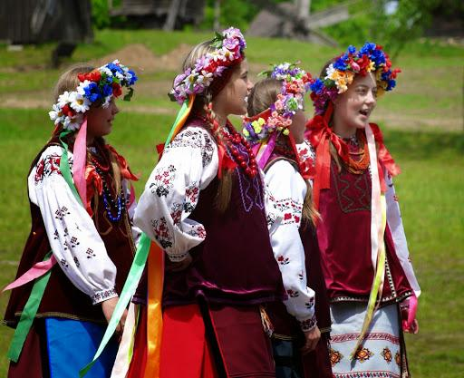
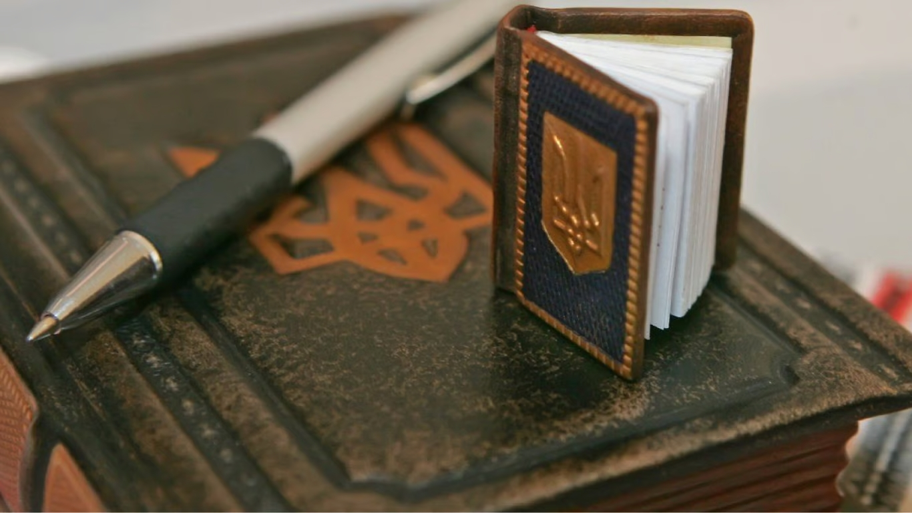
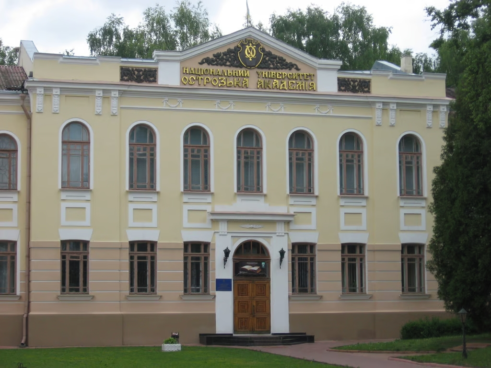
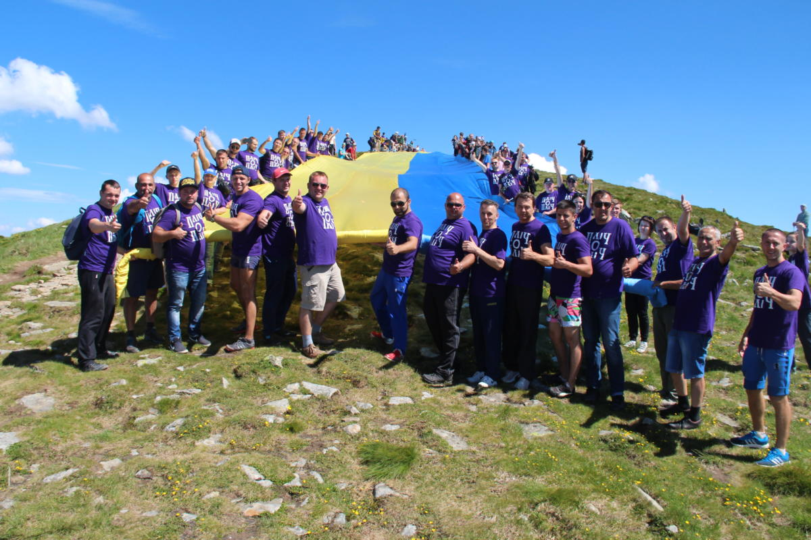
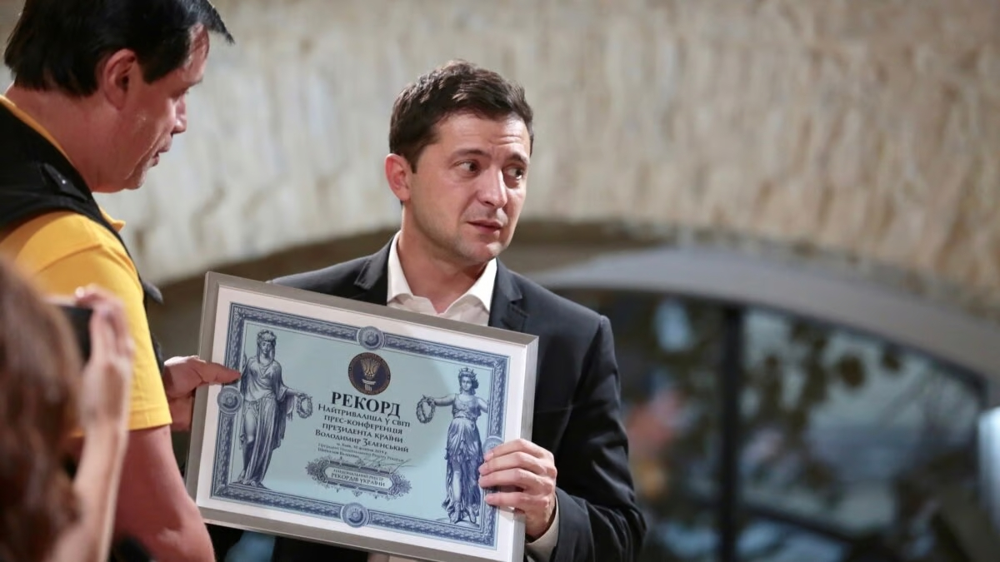
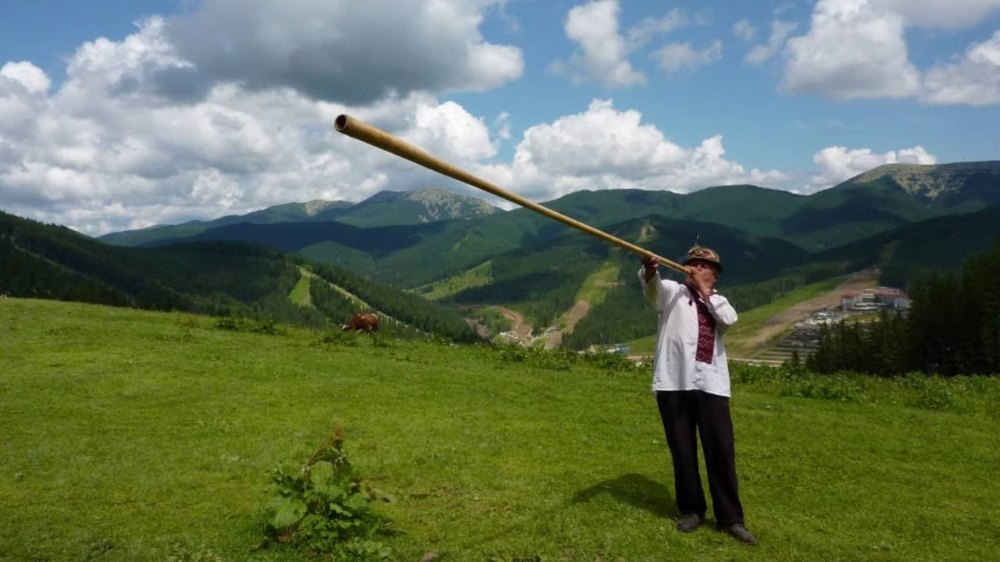
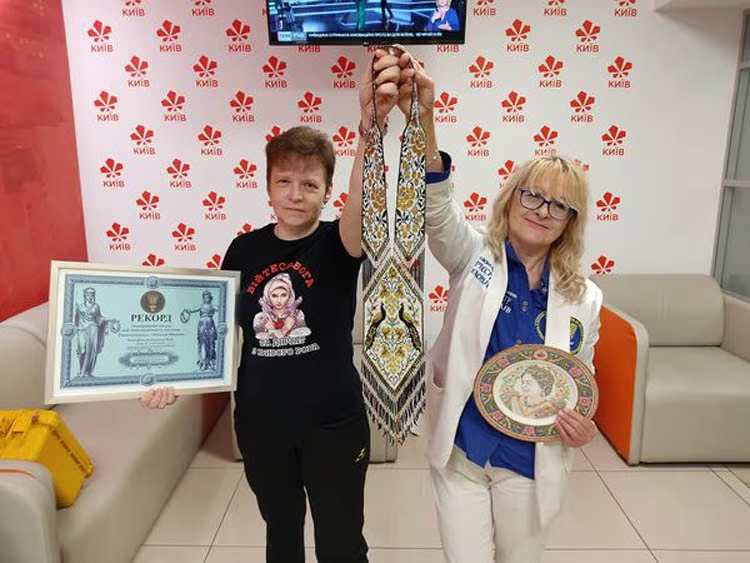
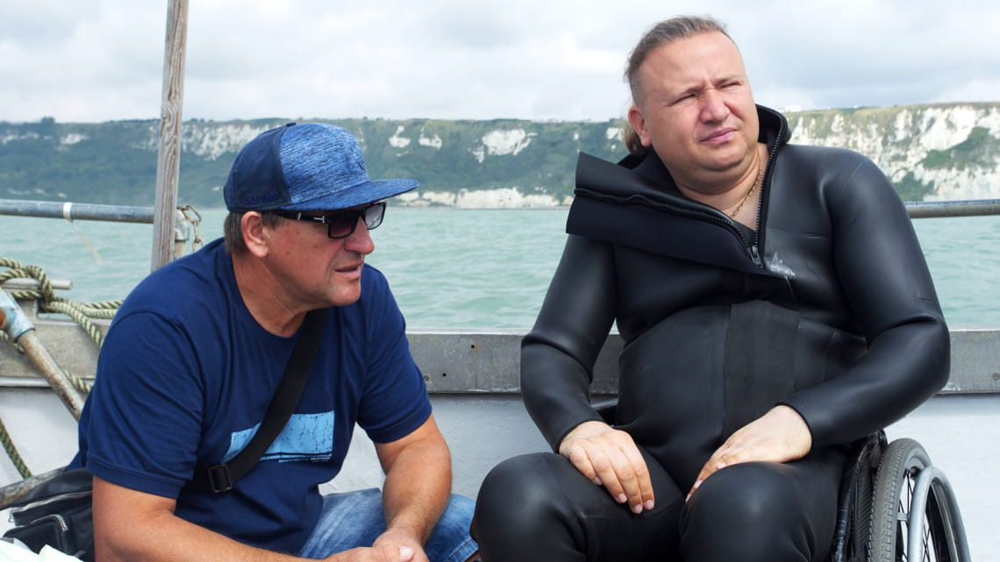

Які неймовірні рекорди встановили українці за 32 роки незалежності: ТОП 10
Україні 2023 року виповнюється 32 роки>. За цей час нашою державою та громадянами було встановлено безліч національних та світових рекордів, які дивують та надихають. Розповідаємо про найнеймовірніші українські рекорди.
1. Найспівочіша нація
Якщо ви сумнівалися, що саме українці є найспівочішою нацією у світі, то цей факт миттю розвіє всі сумніви. Найдовший в історії музичний телевізійний марафон національної пісні, який відбувся на Першому національному телеканалі увійшов до Книги рекордів Гіннеса. Він тривав у прямому ефірі 110 годин! Під час телемарафону лунали виключно українські композиції. Попередній такий рекорд був встановлений Італією 2010 року в місті Пезаро — 103 години 9 хвилин 26 секунд.
2. Найменша Конституція України
Художник-графік Ігор Степанов створив найменшу копію Конституції України. Книга розміром 2х3 см має 160 сторінок, написаних авторським шрифтом. Вага — 15 грамів. Міжнародний внесок у витвір мініатюрного мистецтва — сталь для пера з Великої Британії, папір із Фінляндії, туш з Індії. Зберігається раритет у Музеї книги та друкарства України.
3. Найдовше безперервне читання та наймасовіша лекція
Двічі у Книгe рекордів Гіннеса потрапила Острозька академія, Рівненська область. Перший рекорд — найдовше безперервне читання поетичних творів. Протягом 19 діб три тисячі студентів і викладачів 45 разів читали "Кобзар" Шевченка, а це 11 250 творів. Українці побили рекорд, поставлений у Мексиці, на 19 годин. Другий рекорд — наймасовіша археологічна лекція, яку прочитали для 299 студентів. Вони понад годину слухали археолога, кандидата історичних наук Богдана Прищепу.
4. Найдовший прапор України, піднятий на Говерлу
Найдовший прапор України було піднято на Говерлу 2017 року. Він мав довжину 110,1 метра та ширину 5,7 метра.
5. Найтриваліша у світі пресконференція президента країни
Володимир Зеленський став наймолодшим очільником нашої держави, що переміг із найвищим результатом за всю історію українських виборів — 73,22%. Крім того, він встановив світовий рекорд, провівши найтривалішу у світі пресконференцію чинного президента країни — 14 годин і 7 хвилин спілкування з пресою.
6. Найбільші літак і біплан у світі
"Найбільший літак у світі" Ан-225 "Мрія" не має конкурентів. У книгу Гіннеса занесено 240 рекордів, які поставила ця українська гордість. "Мрію" було розроблено й побудовано в рекордний строк — за 3,5 року. Протягом своїх численних рейсів Ан-225 перевозив грандіозні вантажі та надавав допомогу потерпілим від стихійних лих. 11 вересня 2001 року "Мрія" встановила 124 світових і 214 національних рекордів по вантажопідйомності, швидкості та висоті польоту. На початку повномасштабного вторгнення росії в Україну 27 лютого 2022 року літак було знищено в аеропорту Гостомеля, куди він прибув на ремонт після комерційного рейсу з Данії. Проте ми обов'язково відбудуємо "Мрію" й встановимо ще не один рекорд!
7. Найдовша трембіта світу та рекорд України з трембітання
Королева у світі трембіт зберігається в етнопарку "Гуцул Ленд" на Івано-Франківщині. Вона має довжину 9 м 22 см й перевищує гуцульський стандарт майже втричі. В Івано-Франківську встановили рекорд з наймасовішого трембітання — на території Палацу Потоцьких разом заграли 146 трембіт і карпатських рогів.
8. Найбільший гердан та найбільша експозиція герданів
Встановила рекорд криворізька майстриня-аматорка Наталія Мудрик. Вона сплела з бісеру найбільший гердан в Україні, який пристосований для повсякденного носіння. Його довжина — 81,2 см. На гердані зображено павичів, калину, виноград та інші елементи української символіки. На виставці, що проходила в краєзнавчому музеї Івано-Франківська, експонували майже 2 700 герданів ручної роботи з різних міст.
9. Переплив Ла-Манш за 18 годин та встановив світовий рекорд
Олег Іваненко після травми, якої зазнав ще в юності, змушений пересуватися виключно на інвалідному візку. Проте він встановив рекорд, пропливши 62 кілометри Ла-Маншем за 18 годин!
10. Перший українець у космосі
Леонід Каденюк став першим українцем, який побував у космосі в складі наукової місії на кораблі "Колумбія" 19 листопада 1997 року. Політ тривав 15 діб 16 годин 34 хвилини та одну секунду, за які "Колумбія" здійснила 252 оберти навколо Землі. За цей час український космонавт провів у космосі кілька експериментів із вивчення впливу невагомості на рослини та організм людини. Крім того, він першим в історії космічних експериментів штучно запилив квітки ріпаку. Поруч із космонавтом на борту весь час перебували прапор України, "Кобзар" і аудіодиск групи "ВВ". Саме тоді у відкритому космосі вперше прозвучав український гімн.